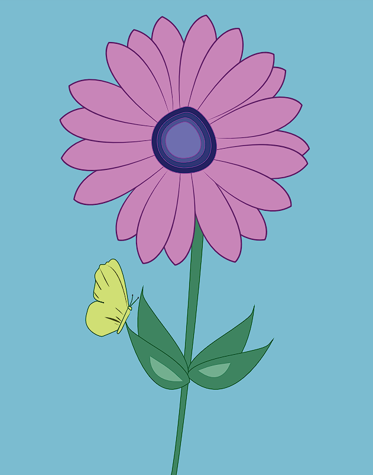
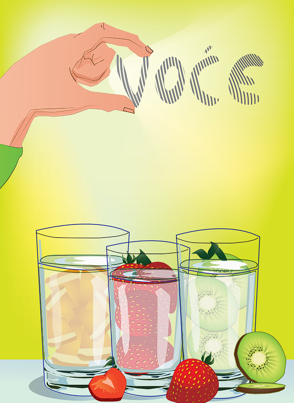

Cvijet napravljen pomocu Adobe Illustratora.

Na fotografiji su oklonjene nesavrsenosti na licu.

Fotografija obradjena kroz razlicite filtere boja.

Na fotografiji su dodani razliciti elementi i dodane su sjene.

Na Adobe Illustratoru napravljene
case pomocu jednostavnih elemenata, i oblika.